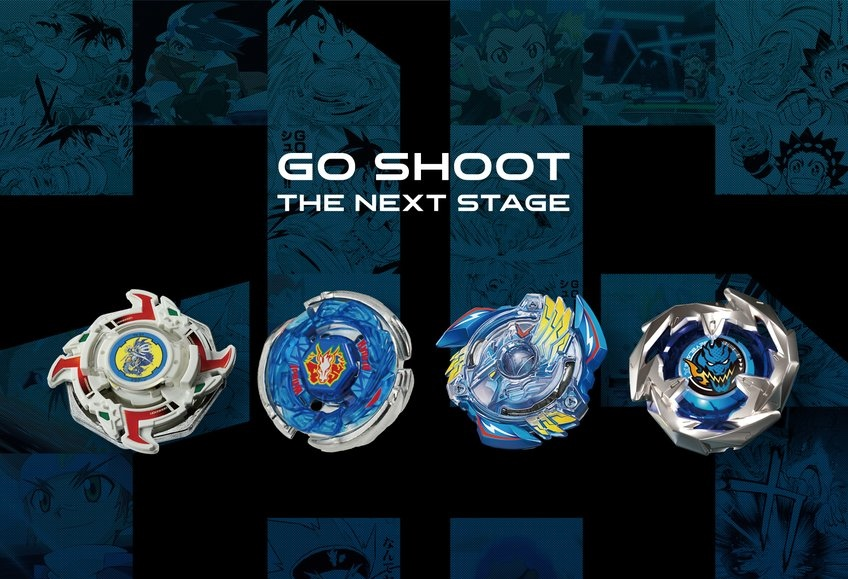

Beyblade (Japanese: ベイブレード Beiburēdo) is a battling spinning top toyline and multimedia franchise developed by the Japanese toy company Takara. Inspired by the older beigoma, the first modern Beyblade was released in July, 1999 in Japan, along with a related manga series. It was called "Spin Dragoon" and also "Ultimate Dragoon." Following Takara's merger with Tomy in 2006, Beyblades are now developed by Takara Tomy. Various toy companies around the world have licensed Beyblade toys for their own regions, such as Hasbro in most Western countries and Sonokong in South Korea.
In Beyblade, participants compete in battles between two or more spinning tops called "Beyblades", or Beys. A Beyblade typically consists of multiple parts, and players can combine parts to create their own combination. Battles typically take place in a bowl-like stadium (called a Beystadium), into which players release Beyblades using a handheld launcher. A player wins if their Beyblade spins for a longer period of time or if the opponent's Beyblade exits the stadium. In Beyblade Burst and Beyblade X, players may also win if their opponent's Beyblade splits apart, known as "bursting".
There are four successive series of Beyblade tops, each designed with its own component parts that are not compatible with tops of other series. Tops are designed for play only with tops of the same series, and each series has a separate media continuity.